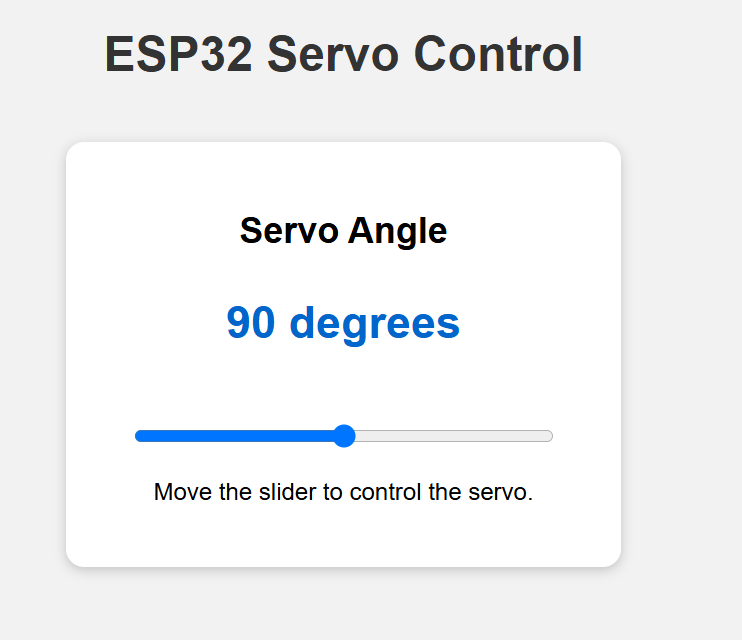

Task 3
Task 3 - Web-Controlled Servo (20 pts)
• Connect an SG90 servo motor to the ESP32.
• Add a slider to the web page with a range from 0 to 180 degrees.
• Moving the slider must change the servo angle.
• Display the selected angle on the web page.
• Evidence: Short video showing the web slider, servo movement.
The webpage should display similar to this

Task 3
Import the library
import network
import socket
import time
from machine import Pin, PWMWifi Setting
# WIFI SETTINGS
ssid = "________"
password = "________"Servo Setup
# SERVO SETUP
servo = ________ ## add the pin that you use with the 50hz frequency
servo_angle = 90 ## set servo angle to 90 degree
Task 3
Create a move servo angle function
def move_servo(angle):
# Keep the angle between 0 and 180 degrees
if angle < ______:
angle = ______
if angle > ______:
angle = ______
# Servo PWM duty range
duty_min = ______
duty_max = ______
# Convert angle 0-180 degrees servo duty
duty = int(
duty_min
+ (angle / ______)
* (duty_max - duty_min)
)
# Send the calculated duty to the servo
servo.duty(________)
print("Servo angle:", angle)
print("PWM duty:", duty)Task 3
Create a Webpage
def create_webpage(angle):
html = """
<!DOCTYPE html>
<html>
<head>
<title>ESP32 Servo Control</title>
<meta name="viewport"
content="width=device-width,
initial-scale=1">
<style>
body {
font-family: Arial;
text-align: center;
background-color: #f2f2f2;
padding: 20px;
}
h1 {
color: ________________;
}
.card {
background-color: white;
width: ________________;
margin: ________________ ________________;
padding: ________________;
border-radius: ________________;
box-shadow:
0 2px 8px
rgba(0, 0, 0, 0.2);
}
.angle {
color: ________________;
font-size: ________________;
font-weight: bold;
}
input[type="range"] {
width: 280px;
margin-top: 20px;
}
</style>
</head>
<body>
<h1>ESP32 Servo Control</h1>
<div class="card">
<h2>________________</h2>
<p
________________ ## Add the class angle here to display the angle value on the webpage
</p>
<input
type="range"
min="0"
max="180"
value="SERVO_ANGLE"
oninput="
document.getElementById(
'angle-value'
).innerHTML = this.value
"
onchange="
fetch(
'/servo?angle=' + this.value
)
"
>
<p>
Move the slider to control the servo.
</p>
</div>
</body>
</html>
"""
html = html.replace(
"SERVO_ANGLE",
str(angle)
)
return html
Task 3
WIFI Connection
# CONNECT TO WIFI
wifi = network.WLAN(
network.STA_IF
)
wifi.active(True)
if not wifi.isconnected():
print("Connecting to Wi-Fi...")
wifi.connect(
ssid,
password
)
while not wifi.isconnected():
print(".", end="")
time.sleep(1)
ip = wifi.ifconfig()[0]
print()
print("Wi-Fi connected!")
print("ESP32 IP address:", ip)
print("Open this address:")
print("http://" + ip)
# ==============================
# START WEB SERVER
# ==============================
address = socket.getaddrinfo(
"0.0.0.0",
80
)[0][-1]
server = socket.socket()
server.setsockopt(
socket.SOL_SOCKET,
socket.SO_REUSEADDR,
1
)
server.bind(address)
server.listen(1)
print("Web server is running...")Task 3
Initial the servo position
# INITIAL SERVO POSITION
move_servo(________)
Main Program
while True:
client = None
try:
client, client_address = (
server.accept()
)
request = client.recv(1024)
request = request.decode()
request_line = request.split(
"\r\n"
)[0]
print("Request:", request_line)
# RECEIVE SLIDER ANGLE
if "GET /servo?angle=" in request_line:
try:
start = ________
end = ________
angle_text = ________
servo_angle = int(________)
move_servo(________)
client.send(
"HTTP/1.1 204 No Content\r\n"
)
client.send(
"Connection: close\r\n"
)
client.send("\r\n")
except Exception as error:
print(
"Servo control error:",
error
)
# SEND MAIN WEBPAGE
else:
webpage = create_webpage(
servo_angle
)
client.send(
"HTTP/1.1 200 OK\r\n"
)
client.send(
"Content-Type: text/html\r\n"
)
client.send(
"Connection: close\r\n"
)
client.send("\r\n")
client.sendall(webpage)
except Exception as error:
print(
"Server error:",
error
)
finally:
if client is not None:
client.close()